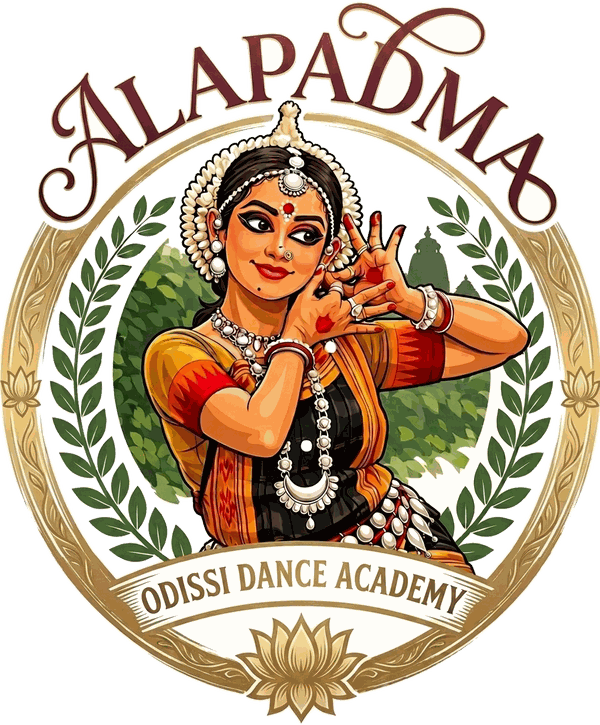

Western Odisha
Sambalpuri
A joyful folk dance from the Sambalpur region of western Odisha, danced in groups to lively Sambalpuri songs and the beat of folk drums. Bright, rhythmic and full of community spirit.
Poetry in sculpture
Odisha, the land of Utkal, is celebrated for its excellence in art, music, dance and sculpture. Its classical dance, Odissi, holds a unique place among the classical dances of India: sculpted, lyrical and devotional.

Origins
Odissi in its contemporary form owes its origin to the temple dance of the Maharis in the Jagannath Temple, and to the Gotipuas, the boy dancers of Odisha.
Its roots reach further still. The Udra, or Odra, dance style delineated in ancient treatises of music constitutes the basis of Odissi. Down the centuries the form evolved through many phases, and today it holds an enviable place among the leading classical dances of India.

The treatises
Delineated in ancient treatises of music, the Udra (Odra) style forms the basis of Odissi.
The temple
Devadasis whose dance was an offering in the Jagannath Temple.
The young dancers
Boy dancers whose tradition, with the Maharis’, shaped Odissi as it is danced today.
Today
Evolved through the centuries into one of India’s leading classical dances.
The Language of Odissi
Graceful gestures and expressive portrayals give Odissi its special character. These are the elements every dancer learns to speak, one class at a time.
The threefold bend
Head, torso and hips curve in opposing directions: a unique posture whose perfect expression lives in Odishan sculpture.
The square stance
A grounded, symmetrical square with knees bent and arms held wide. With the tribhangi, it is one of the two basic postures of Odissi.
The language of the hands
Subtle, symbolic hand gestures that paint images, ideas and feelings in the air.

The swirl
Graceful turns and subtle swirls, described in classical literature, that lend the dance its flow and lightness.
The rhythm of the feet
Delicate, precise footwork in conversation with the drum, the ankle bells marking every beat.
The art of expression
Storytelling through the eyes, face and gesture, bringing poetry, character and devotion to life.

The Meaning of Our Name
In Odissi, Alapadma is the hasta of the fully bloomed lotus. The fingers open and curve apart, like petals unfolding to the morning sun.
It is the spirit of our academy. Every dancer begins as a bud, and with tradition, patient training and devotion, blossoms in their own time.
The Margam
An Odissi recital is completed in five stages, a path that leads from invocation to liberation. Here is each stage, with the items from our repertoire.
Stage I · The invocation
An invocatory dance that opens the recital. The dancer offers salutations to the earth, the divine, the Guru and the audience, setting an auspicious tone for all that follows.
Based on
Stage II · A signature of the style
A unique item conceived and choreographed by Guru Shri Deba Prasad Das, and a hallmark of the style in which Alapadma teaches.
“Every dance presentation of mine bears testimony to the uniqueness of the Odissi style improvised by Guru Shri Deba Prasad Das.”
Purnima
Stage III · The blossoming
Pure dance that blossoms with a raga. Eyes, neck, torso and feet weave ever more intricate patterns as music and movement unfold together.
Pallavis in our repertoire
Stage IV · Expression
Storytelling through expression. Each line of poetry is sung and brought alive through hasta, glance and bhava, the dancer becoming every character in turn.
Poetry and song
Mythological themes
Stage V · Liberation
The finale. Pure dance gathers speed and intricacy, then dissolves into stillness: an offering of the self, and the joy of liberation that completes the recital.
Folk Dances of Odisha
Purnima’s own training at RAWA Academy began at the age of six with both Odissi and folk dance. Alongside the classical items, our repertoire includes two folk dances of Odisha.
Western Odisha
A joyful folk dance from the Sambalpur region of western Odisha, danced in groups to lively Sambalpuri songs and the beat of folk drums. Bright, rhythmic and full of community spirit.
Devotion & ritual
A traditional folk dance of Odisha rooted in ritual and devotion. Carried by song and the steady beat of drums, it is offered as part of seasonal festivals and community worship.
Adornment & Music
Unique costumes and hairstyle, and melodious music with instrumental accompaniment, lend Odissi its special beauty.

The white, flower-like crown that frames the hair and glows under the stage lights.
A red dye that outlines the hands and feet, so every mudra and every step is clearly seen.
Delicate silver ornaments for the forehead, ears, neck, arms and waist, catching the light with each movement.
Costumes made from the silk sarees of Odisha, with patterned borders and a pleated fan that opens in every deep bend.
Odissi is danced to the melodies of Odissi music, traditionally sung and played live. A singer leads, while the instruments give the dance its rhythm and colour.
The barrel-shaped drum whose voice is the heartbeat of Odissi.
A breath of melody that floats above the song.
A singing line that follows and colours the voice.
Small hand cymbals that keep the time.
The dancer’s own instrument, sounding every step.
From the first chauka to the full Margam, learn the classical dance of Odisha in the lineage of Guru Shri Deba Prasad Das and Guru Shri Bharat Charan Giri.